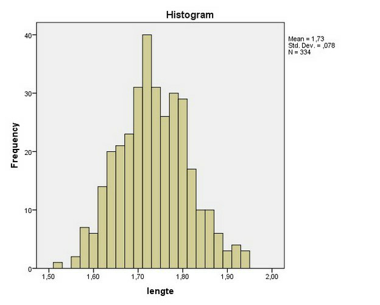
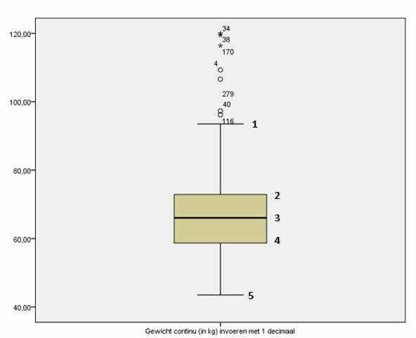
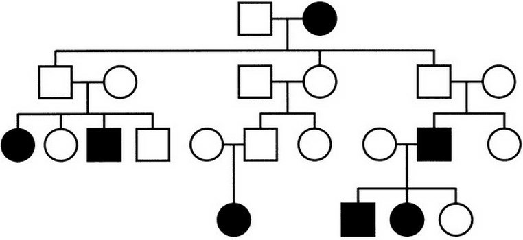

Casus: bloeddruk. Een patiënt komt bij zijn huisarts. Op het moment dat hij binnenstapt krijgt hij een versnelde hartslag. De huisarts meet de bloeddruk en deze blijkt veel te hoog. Nadat hij een tijdje rustig met de patiënt heeft gepraat, meet hij nogmaals de bloeddruk; deze blijkt nu normaal te zijn.
Casus: behandeling van longkanker. Longkanker is een ziekte met een slechte prognose. Als een patiënt uitgezaaide longkanker heeft, is de levensverwachting minder dan een half jaar. De standaardbehandeling is chemotherapie. Sinds enkele jaren is er echter een nieuwe (en zeer dure) behandeling mogelijk: immunotherapie met het middel Ipilimumab. Studies laten zien dat ongeveer 20% van de patiënten veel baat heeft bij het middel en substantieel langer leeft, soms nog jaren. Voor de overige 80% is de behandeling zinloos en zelfs nadelig door de soms ernstige bijwerkingen. Onderzoekers vergeleken in een gerandomiseerd onderzoek de 6 maands-overleving van 100 patiënten behandeld met Ipilimumab met die van 100 patiënten die standaard zorg kregen. Hieronder de resultaten:
| Dood op 6 mnd | In leven op 6 mnd | |
|---|---|---|
| Ipilimumab | 81 | 19 |
| standaard zorg | 92 | 8 |
| Totaal | 173 | 27 |
Vraag 6. Wat is in dit onderzoek na 6 maanden de cumulatieve incidentie op dood zijn? Geef de berekening.
Vervolg casus: behandeling van longkanker (Ipilimumab).
| Dood op 6 mnd | In leven op 6 mnd | |
|---|---|---|
| Ipilimumab | 81 | 19 |
| standaard zorg | 92 | 8 |
| Totaal | 173 | 27 |
Vraag 7. Bereken de Odds Ratio voor Ipilimumab t.o.v. standaard zorg om te overleven.
Vervolg casus: behandeling van longkanker (Ipilimumab).
| Dood op 6 mnd | In leven op 6 mnd | |
|---|---|---|
| Ipilimumab | 81 | 19 |
| standaard zorg | 92 | 8 |
| Totaal | 173 | 27 |
Casus: interventie. In een interventieonderzoek wordt onderzocht of vitamine D tot een verbetering in spierkracht leidt. De uitkomst is verbetering in spierkracht (ja/nee). In de interventiegroep zitten 100 patiënten en in de controlegroep 60 patiënten. In de interventiegroep verbetert 50% en in de controlegroep 25%.
Vraag 9. Wat is het relatieve risico op verbetering in de interventiegroep ten opzichte van de controlegroep? Geef de berekening.
Casus: determinanten van lengte. In een onderzoek naar de determinanten van lengte werd de lengte van 334 twintigjarigen gemeten. Daarnaast werd met een vragenlijst informatie over het eetpatroon tijdens de kindertijd verzameld. De onderzoekers wilden onderzoeken of het eetpatroon tijdens de kindertijd een belangrijke determinant is van volwassen lengte. Figuur 1 toont de verdeling van de afhankelijke variabele lengte:

Vervolg casus: determinanten van lengte. Figuur 1 toont de verdeling van de variabele lengte:

Casus: cognitief functioneren. In een onderzoek naar leefstijl en het cognitief functioneren van ouderen werd bij 1417 ouderen de Mini Mental State Examination (MMSE) afgenomen. De MMSE resulteert in een score tussen 0 en 30, waarbij een hogere score een betere cognitieve vaardigheid indiceert. De gemiddelde MMSE was 25,1 met een standaarddeviatie van 2,6. De mediaan was 28,6. De laagst geobserveerde MMSE was 5 en de hoogste 30. Als leefstijlvariabelen werden roken, alcoholgebruik en gewicht gemeten.
Vervolg casus: cognitief functioneren. Figuur 2 is een boxplot van de variabele gewicht:

Vervolg casus: cognitief functioneren. De onderzoekers vinden dat de relatie tussen leefstijl en cognitief functioneren verschilt tussen mensen met en zonder hart- en vaatziekten.
Casus: alcoholgebruik en beroerte. Een arts-onderzoeker is geïnteresseerd of ernstig alcoholgebruik (variabele ‘alcohol use’) samenhangt met het krijgen van een beroerte (‘stroke’) bij ouderen. Daarnaast wil hij weten of deze relatie verschilt tussen mannen en vrouwen (‘sex’). Hij voerde een cohortstudie uit bij 1329 ouderen (647 mannen en 682 vrouwen). Alcoholgebruik werd onderverdeeld in twee groepen (0 = geen tot matig, 1 = overmatig). Hij analyseert in SPSS met een chikwadraattoets. Onderstaande output geeft het resultaat:
Crosstabulation (alcohol use × stroke? × sex):
| sex | alcohol use | stroke = ,00 no | stroke = 1,00 yes | Total | |
|---|---|---|---|---|---|
| male | ,00 | Count | 367 | 42 | 409 |
| % within alcohol use | 89,7% | 10,3% | 100,0% | ||
| 1,00 | Count | 223 | 15 | 238 | |
| % within alcohol use | 93,7% | 6,3% | 100,0% | ||
| Total | Count | 590 | 57 | 647 | |
| % within alcohol use | 91,2% | 8,8% | 100,0% | ||
| female | ,00 | Count | 541 | 43 | 584 |
| % within alcohol use | 92,6% | 7,4% | 100,0% | ||
| 1,00 | Count | 96 | 2 | 98 | |
| % within alcohol use | 98,0% | 2,0% | 100,0% | ||
| Total | Count | 637 | 45 | 682 | |
| % within alcohol use | 93,4% | 6,6% | 100,0% | ||
| Total | ,00 | Count | 908 | 85 | 993 |
| % within alcohol use | 91,4% | 8,6% | 100,0% | ||
| 1,00 | Count | 319 | 17 | 336 | |
| % within alcohol use | 94,9% | 5,1% | 100,0% | ||
| Total | Count | 1227 | 102 | 1329 | |
| % within alcohol use | 92,3% | 7,7% | 100,0% |
Risk Estimate (95% Confidence Interval):
| sex | Value | Lower | Upper | |
|---|---|---|---|---|
| male | Odds Ratio for alcohol use (,00 / 1,00) | ,588 | ,319 | 1,085 |
| For cohort stroke = ,00 no | ,958 | ,914 | 1,003 | |
| For cohort stroke = 1,00 yes | 1,629 | ,924 | 2,874 | |
| N of Valid Cases | 647 | |||
| female | Odds Ratio for alcohol use (,00 / 1,00) | ,262 | ,062 | 1,100 |
| For cohort stroke = ,00 no | ,946 | ,912 | ,981 | |
| For cohort stroke = 1,00 yes | 3,608 | ,888 | 14,653 | |
| N of Valid Cases | 682 | |||
| Total | Odds Ratio for alcohol use (,00 / 1,00) | ,569 | ,333 | ,973 |
| For cohort stroke = ,00 no | ,963 | ,934 | ,994 | |
| For cohort stroke = 1,00 yes | 1,692 | 1,020 | 2,806 | |
| N of Valid Cases | 1329 |
Mantel-Haenszel Common Odds Ratio Estimate:
| Estimate | ,492 |
| ln(Estimate) | -,710 |
| Std. Error of ln(Estimate) | ,284 |
| Asymp. Sig. (2-sided) | ,013 |
| Asymp. 95% CI — Common Odds Ratio: Lower / Upper | ,282 / ,858 |
| ln(Common Odds Ratio): Lower / Upper | -1,267 / -,153 |
Vraag 16. Bereken het attributief risico voor overmatig alcoholgebruik ten opzichte van geen tot matig alcoholgebruik voor de uitkomst beroerte (‘stroke’) in de totale populatie. Geef het antwoord in 3 decimalen.
Vervolg casus: alcoholgebruik en beroerte.
Risk Estimate (95% Confidence Interval):
| sex | Value | Lower | Upper | |
|---|---|---|---|---|
| male | Odds Ratio for alcohol use (,00 / 1,00) | ,588 | ,319 | 1,085 |
| For cohort stroke = ,00 no | ,958 | ,914 | 1,003 | |
| For cohort stroke = 1,00 yes | 1,629 | ,924 | 2,874 | |
| N of Valid Cases | 647 | |||
| female | Odds Ratio for alcohol use (,00 / 1,00) | ,262 | ,062 | 1,100 |
| For cohort stroke = ,00 no | ,946 | ,912 | ,981 | |
| For cohort stroke = 1,00 yes | 3,608 | ,888 | 14,653 | |
| N of Valid Cases | 682 | |||
| Total | Odds Ratio for alcohol use (,00 / 1,00) | ,569 | ,333 | ,973 |
| For cohort stroke = ,00 no | ,963 | ,934 | ,994 | |
| For cohort stroke = 1,00 yes | 1,692 | 1,020 | 2,806 | |
| N of Valid Cases | 1329 |
Mantel-Haenszel Common Odds Ratio Estimate:
| Estimate | ,492 |
| ln(Estimate) | -,710 |
| Std. Error of ln(Estimate) | ,284 |
| Asymp. Sig. (2-sided) | ,013 |
| Asymp. 95% CI — Common Odds Ratio: Lower / Upper | ,282 / ,858 |
| ln(Common Odds Ratio): Lower / Upper | -1,267 / -,153 |
Vraag 17. Leg uit hoe je de ruwe odds ratio 0,569 interpreteert. Geef hierbij de richting van het verband aan.
Vervolg casus: alcoholgebruik en beroerte.
Risk Estimate (95% Confidence Interval):
| sex | Value | Lower | Upper | |
|---|---|---|---|---|
| male | Odds Ratio for alcohol use (,00 / 1,00) | ,588 | ,319 | 1,085 |
| For cohort stroke = ,00 no | ,958 | ,914 | 1,003 | |
| For cohort stroke = 1,00 yes | 1,629 | ,924 | 2,874 | |
| N of Valid Cases | 647 | |||
| female | Odds Ratio for alcohol use (,00 / 1,00) | ,262 | ,062 | 1,100 |
| For cohort stroke = ,00 no | ,946 | ,912 | ,981 | |
| For cohort stroke = 1,00 yes | 3,608 | ,888 | 14,653 | |
| N of Valid Cases | 682 | |||
| Total | Odds Ratio for alcohol use (,00 / 1,00) | ,569 | ,333 | ,973 |
| For cohort stroke = ,00 no | ,963 | ,934 | ,994 | |
| For cohort stroke = 1,00 yes | 1,692 | 1,020 | 2,806 | |
| N of Valid Cases | 1329 |
Mantel-Haenszel Common Odds Ratio Estimate:
| Estimate | ,492 |
| ln(Estimate) | -,710 |
| Std. Error of ln(Estimate) | ,284 |
| Asymp. Sig. (2-sided) | ,013 |
| Asymp. 95% CI — Common Odds Ratio: Lower / Upper | ,282 / ,858 |
| ln(Common Odds Ratio): Lower / Upper | -1,267 / -,153 |
Vraag 18. Is geslacht een effectmodificator, een confounder of geen van beiden in de associatie tussen alcoholgebruik en het krijgen van een beroerte? Leg uit hoe je tot dit antwoord gekomen bent.
Casus: pijn. Er is een experimenteel onderzoek uitgevoerd waarbij een nieuwe gedragstherapie (de interventie) is vergeleken met de gebruikelijke therapie (de controle). In beide groepen zaten 75 personen. De uitkomstmaat is pijn (schaal 0 tot 100; hoe hoger de score, des te sterker de pijn). De tabel toont de gemiddelde pijnscores per groep:
| voormeting | nameting | |
|---|---|---|
| interventie | 80 | 40 |
| controle | 70 | 60 |
Vervolg casus: pijn.
| voormeting | nameting | |
|---|---|---|
| interventie | 80 | 40 |
| controle | 70 | 60 |
Casus: voetbal. Bij de afdeling psychologie wordt onderzoek gedaan naar mogelijke hersenbeschadiging bij jonge voetballers, mogelijk door het herhaaldelijk koppen. Er werd een reactietijd-test gedaan bij jonge voetballers en bij andere sporters van ongeveer dezelfde leeftijd. Onderstaande output toont descriptieve informatie:
| Reaction time | |||
|---|---|---|---|
| Sport | N | Mean | Std. Deviation |
| voetbal | 45 | 629,2889 | 64,57400 |
| anders | 93 | 622,6237 | 56,68485 |
Vervolg casus: voetbal.
| Reaction time | |||
|---|---|---|---|
| Sport | N | Mean | Std. Deviation |
| voetbal | 45 | 629,2889 | 64,57400 |
| anders | 93 | 622,6237 | 56,68485 |
Vraag 23. Bereken de effectmaat voor de reactietijd van voetballers t.o.v. andere sporters.
Casus: screening op baarmoederhalskanker. Sinds een aantal jaar worden vrouwen boven de 30 jaar gescreend op baarmoederhalskanker. Onderstaande tabel geeft aan hoeveel vrouwen er in de afgelopen twee jaar werden gescreend, hoeveel vrouwen een positieve test hadden en hoeveel vrouwen daadwerkelijk baarmoederhalskanker hadden.
| Jaar | Aantal vrouwen | Positieve test | Baarmoederhalskanker |
|---|---|---|---|
| 2017 | 5000 | 400 | 60 |
| 2018 | 5500 | 400 | 70 |
Vraag 24. Wat is de prevalentie van baarmoederhalskanker in de gescreende populatie in 2018? Geef de berekening.
Klinische genetica.
Vraag 26. Martin en Carola komen op het spreekuur; Carola is 10 weken zwanger. Carola’s broer heeft cystic fibrosis (CF). Wat is de kans dat Carola draagster is van CF?
Vraag 27 (vervolg op vraag 26). Noem twee vragen die je aan Martin wilt stellen, waarop het antwoord nodig is om de kans aan te geven dat bij de ongeboren baby van Martin en Carola sprake is van CF.
Vraag 28. Een ouderpaar heeft een zoon en dochter met dezelfde zeldzame genetische aandoening. Zij zijn de biologische ouders. De ouders hebben beiden zelf geen klachten of verschijnselen (nu en ook als kind niet). Noem drie redenen waardoor dit zo kan zijn.
Vraag 29. Noem twee situaties waarin een uniparentale disomie (UPD) leidt tot ziekteverschijnselen.
Casus. Het voorkomen van een aandoening wordt in deze stamboom weergegeven door een gevuld symbool.
Vraag 30. Wat is de meest waarschijnlijke overervingsvorm in deze familie? Leg uit hoe je het voorkomen van de aandoening in deze stamboom kunt verklaren.

Meerdere antwoorden mogelijk.
Vraag 35. Het Williams-syndroom wordt gekenmerkt door een ontwikkelingsachterstand, gedragskenmerken en een herkenbaar gelaat. Noem één kenmerk dat bij het onderzoek van het gelaat (dysmorfie) bij een meerderheid van de mensen met die aandoening aanwezig is.
Uitgevende instantie: Nederlands Huisartsen Genootschap; Titel: Samenvattingskaart Anemie, in herziening 2003; URL: http://www.nhg.org/standaarden/samenvatting/anemie; Geraadpleegd op: 11 september 2018.
Vraag 38. Welke drie gedragingen worden doorgaans onder research misconduct verstaan? Noem alle drie en geef van alle drie een omschrijving.